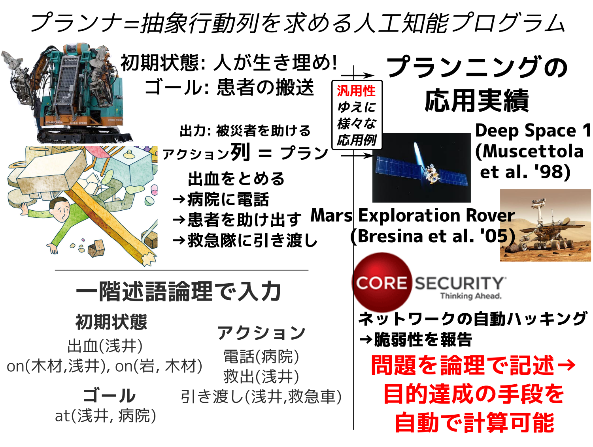
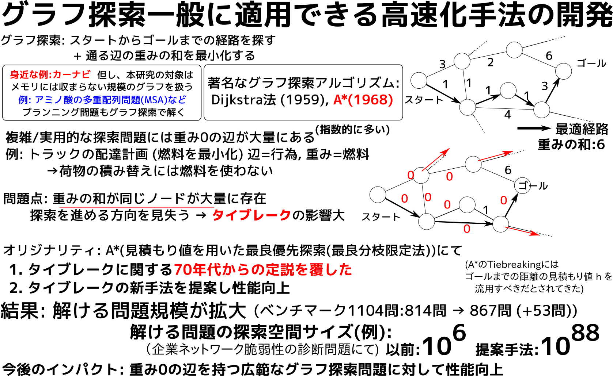
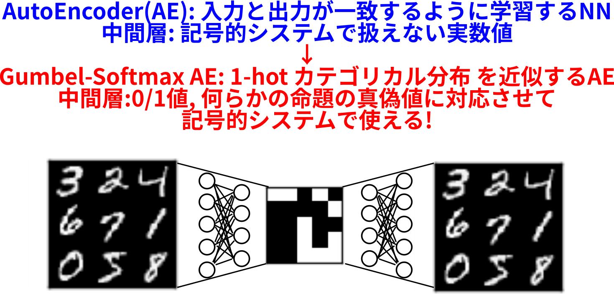
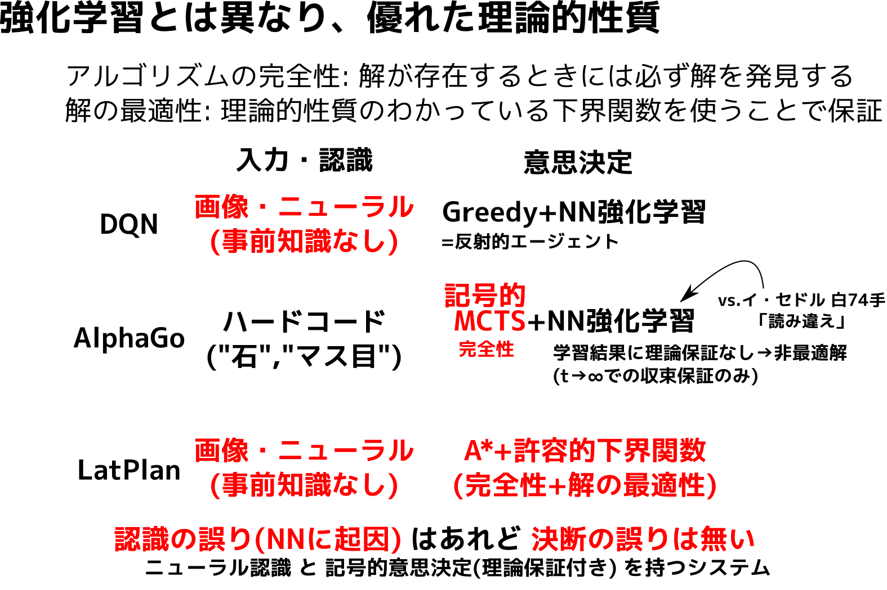

研究テーマ: Neural-Symbolic複合システムによる 次世代AIシステムの研究
浅井 政太郎 東京大学 総合文化研究科 学振DC2
発表要旨
これまでの研究業績
Fully Automated Cyclic Planning for Large-Scale Manufacturing Domains※1. ICAPS14.
Solving Large-Scale Planning Problems by Decomposition and Macro Generation※1. ICAPS15.
Tiebreaking Strategies for A* Search: How to Explore the Final Frontier※1. AAAI16. (JSAI 学生奨励賞)
Tie-Breaking Strategies for Cost-Optimal Best First Search※1. JAIR 58 (2017): 67-121.
Exploration Among and Within Plateaus in Greedy Best-First Search※1. ICAPS17.
Efficient Optimal Search under Expensive Edge Cost Computation※2. IJCAI17.
Classical Planning in Deep Latent Space: From Unlabeled Images to PDDL (and back)※1. KEPS17.
今後の研究計画, 研究成果の産業応用への抱負
※1 Masataro Asai, Alex Fukunaga
※2 Masataro Asai, Akihiro Kishimoto, Adi Botea, Radu Marinescu, Elizabeth Daly M, and Spyros Kotoulas
1 背景 – AIプランニング

1.1 誰?
And let me introduce these robots. The guy in the left is Astro boy.
1.1.1 誰?
As you know, he is a famous manga superhero invented by Tezuka Osamu in 50s,
1.1.2 誰?
and he can think, hear, speak, act. he also has emotions.
1.1.3 誰?

In contrast, the guy in the right is a real robot that is actually in use @ fukuoka prefecture for the rescue purpose.. His name is T-52 Enryu, developped by a Japanese company Temzak. He is huge and powerful – about 4 meters in height and can carry things which is as heavy as 500kg. Well, so, in a sense, he is also a superhero in the real disastrous situation.
1.1.4 誰?
But does he have feelings or can he think? Can he even move around by his own?
1.1.5 誰?
No. It requires full human intervention — it is indeed operated by a driver who gets in or by a remote control. It is more like a super-sophisticated shovel car.
1.2 自律行動のための自動プランナ (≠ モータ制御)
研究テーマのプランニングは、ロボットに、人間の助けを借りず、いかに自律して行動させるかを扱います。 これをモデル化したプランニング問題は、具体的な行動の列を求める 組合せ最適化問題です。
プランニング問題のタスクは、 センサーから初期状態とゴールを受け取って、被災者を助ける正しい手順を出力することです。
たとえば、この図では男性が瓦礫に埋まって助けを求めています。 プランニング機能のあるロボットは、コレに対して「男性を助けよ」という大まかな指示を受けます。
1.3 自律行動のための自動プランナ (≠ モータ制御)
指示の内容には、図のように初期状態とゴール、許可された行動のリストが入っています。 ロボットは、自動プランニングにより、人間の代わりに適切な行動を組み立てて、ゴールを自動で達成します。
1.4 自律行動のための自動プランナ (≠ モータ制御)

プランニングは汎用な枠組みなので、災害救助以外にも様々な問題に適用することができます。 現実の応用例では「宇宙探査機運行問題」や「企業ネットワーク脆弱性問題」も表現できます。
このように、プランニングは、難しい問題を汎用性を失わずに解くことを目指します。
1.5 プランニング(自動行動計画)分野の位置づけ
プランニング分野は、人工知能の専門分野という位置づけで、 隣接するオペレーションズ・リサーチや アルゴリズム論などの分野の技術を利用しています。 特に、プランニング問題を解くのにはグラフ探索の技術が用いられます。
1.6 業績1: 査読付き国際学会 ICAPS14 (採択率33%)
研究業績に移ります。 ここでは、大規模なプランニング問題を解くために 問題設定・ドメインによらず汎用に繰り返し構造を抽出する方法を開発しました。 元の問題を繰り返し一周分の小問題に分割して解くことで、 高速化と3割の生産時間短縮を達成しました。
大切なのは汎用性です。 生産問題に限らず、掃除にも宇宙船にも同じ実行バイナリが使えます。
1.7 業績2: 査読付き国際学会 ICAPS15 (採択率33%)
続いて二、三本目の業績は、 先ほどの手法で得られるのは1種類の小問題だけでしたが、これを複数種類の小問題に拡張しました。 結果、より様々な問題で高速化を達成しました。 ここまで汎用に小問題分割を適用した研究は、分野では始めてです。
1.8 業績3: 査読付き国際学会 AAAI16 (採択率26%)
最後に、申請後に行った研究が、難関国際学会 AAAI に採択されました。 研究内容は、コスト0の辺を含むグラフを扱うグラフ探索アルゴリズム一般に適用できる内容で、 非常に大きなインパクトを持つことが考えられます。

1.9 業績4: 査読付き論文誌 JAIR (採択率12%) スキップ予定
1.10 業績5: 査読付き国際学会 ICAPS17 (採択率33%) スキップ予定
1.11 業績6: 査読付き国際学会 IJCAI17 (採択率25%)
2 産業技術総合研究所で行いたい研究
Neural-Symbolic複合システム
による
次世代AIシステム
の研究
2.1 Q. いま はやり のDeep Learningとの違いは?
A. レイヤが違う
機械学習・Neural Networks == 関数近似
for 認識・反射
- 入力 は Subsymbolic (連続値)
画像、音声、非構造化テキスト:
- 感覚的知能:
反応, 直後 の行動の決定
パブロフの犬 : 餌を認知→よだれ
自動運転 : 赤信号,人 → 止まる.
翻訳 : 文章 → 文章
囲碁局面の評価関数 : 局面 → 勝率
☺ 効率よく 1-to-1 mapping
☹ 単純作業
推論・探索
for プランニング・ゲーム・定理証明
- 入出力は Symbolic
論理 オブジェクト ルール
- 論理・推論による知能:
未来に渡る 戦略の決定
(戦略 = 行動の 列や木)
レスキューロボ : ゴール = 被災者生存
証明器 : ゴール = QED
コンパイラ : 命令列の生成
囲碁,将棋 : ゴール = 勝利
☺ 順序制約+複雑な作業
- AlphaGo = Subsymbolic (DLNNによる評価関数) + Symbolic (MCTSによる探索)
2.2 既存の有名システム
AlphaGo = Subsymbolic (NNによる評価関数) + Symbolic (MCTSによる探索)
- ただし ドメイン依存 – 囲碁に特化, "マス目"や"石"といった概念をハードコード
- 膨大な棋譜が必要 — 運用データがない環境(e.g.火星)には適用不能
- 人って模範解答がないと行動できませんか? 真の自律機械は前例無しでも行動可能
DQN = Subsymbolic (DLNN) + 強化学習 (DLNN)
様々な Atari Game につかえる汎用フレームワーク (Invader, Packman…) だが
- RLのActing: 学習したpolicyに従ってgreedyに行動
- Atariゲームは 脊髄反射で生き残ることが可能 → 複雑な論理思考はいらない!
2.3 記号的AIによる論理推論の重要性
2.4 業績7: 査読付きワークショップ KEPS (採択率60%)
2.4.1 研究業績7 : 査読付きワークショップ KEPS
2.4.2 業績7: 査読付きワークショップ KEPS (採択率60%)
2.4.3 Gumbel-Softmax

2.4.4 研究業績7 : 査読付きワークショップ KEPS

3 今後の研究計画
4 研究成果の産業応用
記号的推論により様々な分野にブレークスルーをもたらす
ピックアップロボ以上の産業用ロボ
— 画像 → 論理表現 → 記号的推論 → 行動決定
— 動的な環境や目標に自動で対応できる
人工無能以上のチャットボット
— テキスト → 論理表現 → 記号的推論 → 意図推定 → 返答
5 まとめ
以上です、ありがとうございました。
- 難関国際会議(33%) Fully Automated Cyclic Planning for Large-Scale Manufacturing Domains. In ICAPS2014.
- 任意の問題から1種類の繰り返し構造を自動で検出
- 工場での製造スケジューリング (x1000 高速化, 探索空間 106 → 10274)
- 難関国際会議(33%) Solving Large-Scale Planning Problems by Decomposition and Macro Generation. In ICAPS2015.
- 複数の繰り返し構造をより柔軟・汎用に組み合わせる手法
- ベンチマークセット全体で高速化 (x3-4 高速化, 探索空間 107 → 1028)
- 難関国際会議(26%) Tiebreaking Strategies for A* Search: How to Explore the Final Frontier. In AAAI-2016. (JSAI 学生奨励賞)
- コストゼロの辺がグラフ探索に引き起こす問題を解決 (探索空間 106 → 1088)
- 難関論文誌(12%) Tie-Breaking Strategies for Cost-Optimal Best First Search. Journal of Artificial Intelligence Research 58 (2017): 67-121.
- (3.) に加え タイブレーキング と 非最適コスト探索の関連性を指摘, さらに性能向上
- 難関国際会議(33%) Exploration Among and Within Plateaus in Greedy Best-First Search. In ICAPS2017.
- 非最適コスト探索をフラクタルを用いて改善
- プラトー内均一化とプラトー間均一化の直交性を実証
- 難関国際会議(25%) Efficient Optimal Search under Expensive Edge Cost Computation. In IJCAI-2017.
- 辺コストの動的計算が必要な問題に対して高速な最適アルゴリズムDEA*
- 国際ワークショップ(60%) Classical Planning in Deep Latent Space: From Unlabeled Images to PDDL (and back).
Knowledge Engineering for Planning and Scheduling (KEPS) Workshop
- 画像から命題を自動生成して記号的AIで組合せ最適化問題を解き、画像で出力するシステム
6 付録
6.1 既存システムとの違い (追加)
NNで 直接問題を解くシステム
TSP [Hopfield and Tank, 1985], NeuroSolver [Bieszczad and Pagurek, 1998]
— NNで解くが、入力はシンボリック (それぞれのニューロンが人の与えた状態変数に対応)
— 完全性、最適性などの補償なし
NNを認識でなく探索の枝刈りの中で使うシステム
AlphaGo [Sievers 16], [Arfaee et al., 2011], [Satzger and Kramer, 2013]
— LatPlan は NNを探索の外で使う
6.2 Learning from Observation との違い
主にロボットの経路探索 (ローレベル制御) [Argall et al., 2009]
ボードゲームの学習だが「マス目」など強い仮定 [Barbu et al., 2010; Kaiser, 2012; Kirk and Laird, 2016]
Action Segmentation problem がある
— 「映像の観察」を中心とするので、いつアクションが始まる/終わるのか解らない
— LatPlan には関係なし
6.3 AIプランニングの Killer App
- 人が高価or不可能な作業
- 原発, 宇宙空間, 火星, 深海
- 正しさと最適性の理論保証が必要なミッションクリティカルシステム
- 製造システム、運送 (時間=お金)
人工衛星 (燃料使いきれば運用終了)
間違った解は許されない
- 思考過程を説明可能なシステム
- レスキュー・宇宙船 (人間の安全がかかっている)
6.4 古典プランニング問題 (決定的,完全情報) – Blocksworld
非古典的なさまざまな拡張
(並列アクション,POMDP,HTN… どのAIの教科書にものっている)
6.4.1 アクション = 条件付き状態遷移
アクション (move ?X ?Y)
?X, ?Y : 変数。 値 BLOCK-A, BLOCK-B などを適用して使う
条件 と 効果 で構成される
条件 : 実行に必要な条件を表す命題
(clear ?X) : 積み木 ?X の上が空
(clear ?Y) : 積み木 ?Y の上に空
効果 : 前後の状態の 差分 を表す命題
(on ?X ?Y) を 追加 : ?Y の上は ?X
(clear ?Y) を 削除
(:action move :parameters (?X ?Y) :preconditions (and (clear ?X) ; (1) (clear ?Y)) ; (2) :effect (and (on ?X ?Y) ; (3) (not ; (4) (clear ?Y))))
モデリング言語 PDDL で記述
6.4.2 プランニング = グラフ探索
ノード : 状態 = 命題の集合 ⇒ (on A B), (clear A) など
辺 : アクション ⇒ (move A B) 等

*1 [Helmert, 2006] [Richter, 2010]
6.5 古典プランニングを研究する意義は?
6.6 AIの倫理について
- 研究内容は 漠然とした「AI」のうち グラフ探索 の研究
- AIの目的はプランナのゴールで定義される
- AI自体は善悪の判断を行わない
- 人が与えるゴールについての倫理的問題 (→ 兵器使用)
- 価値判断は与えられる入力の中にある = 使用者の価値観/データのバイアスを反映
- 悪用の問題はある。しかし、自分としては、災害救助ロボットなど、人道的な応用を目指している
6.7 ディープラーニング関連・LatPlan実装
詳しくは論文を
Keras + TensorFlow
1764(42x42)
[→FC(4000,ReLu)→Batchnorm→Dropout(0.4)] × 2
→FC(49,GumbelSoftmax) (variational loss)
[→FC(4000,ReLu)→Batchnorm→Dropout(0.4)] × 2
→1764(42x42) (loss: Binary crossentropy)
- なぜ全結合??
- 論文の主題は SAEで命題を作る方針がそもそもうまく行くかどうか
→余計な要素を省いて限りなくシンプルに
- 8-パズルでの訓練
- 可能な全状態 (362880) 中 12000 枚 で訓練 → 汎化能力あり
Adam optimizer (learning rate:0.001)
6.8 第五世代コンピュータとの違いは?
第五世代コンピュータ : 並列推論機械(Prologベース,ハードウェア,OS)
ハードの問題ではなく、 根本的なソフトウェア技術、 探索技術 が未発達だった
| 第五世代 | 現在 |
|---|---|
| 後方全探索+バックトラック | 前方ヒューリスティック探索 |
| Prologベース | C/C++で高度に最適化されたプログラム |
| State packing, 決定木, mutex… |
今はベンチマーク問題 1104問 のうち 5分で 800問 前後解ける
仮に 当時のソフトウェア を 現在のハードウェア で動かしたとしても、 100問も解けないだろう
6.9 Explicit Graph と Implicit Graph との違い
カーナビ、ソーシャルグラフなど : Explicit Graph Search
グラフ全体がメモリ(〜数ペタバイト)または二次記憶(〜数ゼタバイト)に収まる
参考: 2012年の全世界のデジタルデータ: 数ゼタバイト (1ZB = 1021 バイト)
AI and Web の分野, Social graph の解析など
プランニングにおける探索グラフ : Implicit Graph Search
地球に存在する全計算資源を集めても二次記憶に入らない
グラフのノード数は状態変数に対して 指数的に増加
動的メモリ確保+優れた枝刈りをしないと問題が解けない
探索空間サイズの例:
3x3x3のルービックキューブ: 4.32 x 1019 = 4 エクサバイト
4x4x4のルービックキューブ: 7.40 x 1045 > 1024 ゼタバイト
5x5x5のルービックキューブ: 2.83 x 1074
Gantz et al. "The digital universe in 2020: Big data, bigger digital shadows, and biggest growth in the far east." IDC iView: IDC Analyze the Future 2007 (2012): 1-16.
6.10 似たような研究は誰がやっていますか どこでやられていますか
ICAPS, SoCS : 例年200人-300人の参加者を集めており大変盛況,
AAAI, IJCAI : プランニングに関する論文は例年数十本採択 Proceedingsの一つの章
JAIR, AIJ : 論文誌でもプランニングの論文は多い (JAIR Volume 54: 12本中 2本 がプランニング論文)
主な研究室:
MIT CSAIL (Brian Williams), Carnegie-Mellon,
NASA (NASA Ames および NASA/Caltech JPL のそれぞれに20名以上の研究者), 欧州宇宙機関(ESA)
King's College London, U. Freiburg, U. Bazel, U. Toronto, U. Ben-Gurion
指導教員は NASA JPL AI Lab の元メンバー
6.11 国内で誰が似たようなことをやっているか
この専門分野をやっている人は少ない
石田 亨先生 (京都大学) — 以前は日本のA*系の探索手法の代表者, Richard Korf と共著, いまはやっていない
少し離れているが似ている研究というと
SATソルバ, ASP(解集合)ソルバ, CPソルバ系 推論系 – logic and reasoning
- 田中 哲朗先生 (総合文化研究科)
- 鍋島英知先生 (山梨大)
- 井上克己先生 (NII) — Lemma Reusing for SAT based Planning and Scheduling (ICAPS10)
- 田村直之先生, 平山勝利先生 (神戸大)
- 田沼先生
AAMAS マルチエージェント, CSP
- 九大 横尾誠先生
ERATO: 同じくグラフ探索をやっているが、explicit graph
- 河原林健一先生 (NII)
- 秋葉先生
ゲーム系
- 岸本先生 (東大将棋)
- 金子先生 (ゲーム)
-—
事情: 自分の指導教官(Alex Fukunaga)がアメリカから飛んできた、もともと日本にいなかった研究者だった
Richard Korf — Alex Fukunaga — 浅井 政太郎
6.12 汎用性を失わずに解く?
No Free Lunch 定理: 最適化アルゴリズムの性能は 全問題の平均を取れば 全て同じ
Q. NFL定理のもとで「汎用性を失わずに高速に解く」というのは不可能?
A. NFL定理は確かにそのように主張するが、プランニング分野の意味する「汎用性」は
実問題(人間にとって有意義な問題の集合) における汎用性である。
全プランニング問題の集合 ⊇ 人間にとって有意義な問題の集合
従って、 全問題の平均を取れば という前提が成り立たない。
6.13 その研究は…
| 重要度 | 評価 | オリジナリティ | 過去のインパクト | 未来のインパクト | 動機 | |
|---|---|---|---|---|---|---|
| ACP | 発表した | ループの概念を検出 | 大規模問題 | 産業応用 | 人間プログラマでは追いつかない | |
| 難関学会 | ||||||
| CAP | 難関学会 | 問題分割手法 | 大規模問題 | 産業応用 | より一般化したい | |
| 発表した | 柔軟な統合手法 | それまでの分割系の手法より | ||||
| 広範囲に分割 | ||||||
| AAAI16 | AAAI査読者: | 同コストのノードの分類 | 70年代からの定説を覆す | 広範なグラフ探索問題 | 下界以外で改善したかった | |
| 2/3 人に絶賛 | 通常と異なる方法で性能改善 | 基礎技術 | ||||
| (+ JSAI学生奨励賞) | コスト0は実応用によく使われる | |||||
| IJCAI17 | IJCAI査読者: | 辺コストが未知のドメイン | 医療福祉での実問題 | |||
| 明確な動悸,十分な実験 | という問題設定 | 全ての辺を計算できない | ||||
| KEPS17 | IJCAI査読者: | 画像から自動で命題を生成 | ニューラルは記号と相容れない | ニューラル・記号複合システム | ||
| 「重要な方向性」 | シンボルグラウンディング |
6.14 HTN と ICAPS-15 の違い
HTNは人間が問題分割を行う 人件費を考えると非常にコストパフォーマンスが悪い → 自動で問題分割
6.15 Q&A
- Q. 探索空間の比較について、なぜ「以前」の数字がスライドによって変わるの?
- A. 論文の中で使った実験設定が異なるからです。